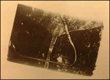

Im Dezember 1945 wird
durch Zufall eine aus 52
religiösen und philosophischen Schriften bestehende Textsammlung ausgegraben, die
1600 Jahre zuvor in einem Tonkrug versteckt worden war.
 Ein Exemplar der Kodizes wurde
1945 am Fuße des Djebel al Tarif entdeckt:
die meisten Papyrusbücher waren wie dieses
in Leder gebunden.
Eine Gruppe von Bauern stößt
unweit des Dorfes Nag Hammadi in Oberägypten auf
eine echte Bibliothek
in koptischer
Sprache, also der Sprache, die von
den ägyptischen Ur-Christen gesprochen wurde. Die Nachricht
schlägt in den Kreisen der Geschichtswissenschaftler und Theologen wie
eine Bombe ein.
In
dem 1200 Seiten umfassenden Korpus, der heute im
koptischen Museum in Kairo aufbewahrt wird, hat
vor
allem
eine Schrift großes Aufsehen erregt: Das Evangelium
nach Thomas, das ursprünglich den Titel "Die geheimen
Herren-Worte des Thomas-Evangeliums" trug.
55 Jahre
nach dieser wunderbaren Entdeckung ist der Fund weiterhin
Gegenstand von Polemiken, und die Untersuchung der Schriften führt
immer wieder zu heftigem Meinungsstreit.
Zahlreiche Artikel wurden bereits veröffentlicht: die Ansichten
reichen von einer Interpretation aus der
Sicht der Rosenkreuzer-Bewegung bis hin zur religiösen
Omerta. Bis heute fragen sich die
Wissenschaftler, welchen Einfluss diese Entdeckung auf unsere Gesellschaft schließlich
haben wird.